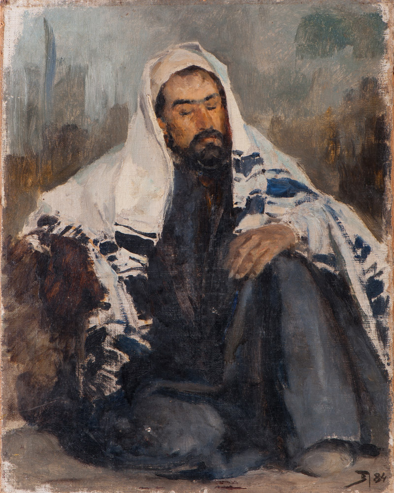

Vasily Polenov in the Holy Land
Dreaming of capturing the lands where Jesus of Nazareth preached, Vasily Dmitrievich set off on a journey to the holy places.
Source: art-and-houses.ru. Translated from Russian.
For their summer exhibitions, museum estates always prepare interesting subjects that especially attract the public. The displays are often "framed" by festivals with music, poetry and prose, and plays performed in the open air. In this respect the V. D. Polenov Museum-Reserve in the Tula region is undoubtedly the leader.
"Vasily Polenov in the Holy Land" is an exhibition devoted to the famous cycle of paintings "From the Life of Christ", the "Gospel Cycle", as the artist himself called it, who considered the project "the chief work of my life". Dreaming of capturing the lands where Jesus of Nazareth preached, and of seeing the Temple where the events took place that he intended to paint in "Christ and the Sinner", Vasily Dmitrievich set off on a journey to the holy places. He visited Jerusalem, Jericho, Tiberias, the Jordan Valley, the shore of the Dead Sea and Samaria, and painted a huge number of studies. During his journeys to the East, made twice (in 1881–1882 and 1899), the works he created directly in the open air revealed with new force Polenov's extraordinary talent as a landscape painter, his ability to convey moods subtly and movingly: the peaks of southern mountains lit by the sunset, patches of cypress against the blue sky.
The exhibition now opening will show for the first time such paintings from the Gospel cycle as "The Coasts of Tyre", "Martha Received Him into Her House", "Whom Do Men Say That I Am?", studies for the canvas "Christ and the Sinner", as well as Polenov's graphic works connected with his work on the paintings of the Gospel cycle, photographs from his journeys to the East, notebooks, and the manuscript of V. D. Polenov's literary and philosophical work "Jesus of Galilee". Viewers will also see the preparatory portrait "I. I. Levitan in Oriental Costume" (1884), painted by Polenov (Isaac Ilyich Levitan posed for the central image of Christ), and the canvas "Tiberias", recently acquired by the museum. The international arts festival "In Search of the Promised Land" is timed to coincide with the exhibition.



 Faith, Creativity, the Meaning of Life
Faith, Creativity, the Meaning of Life